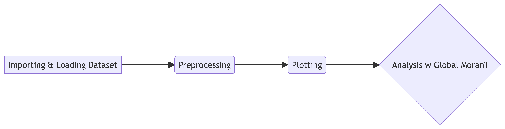
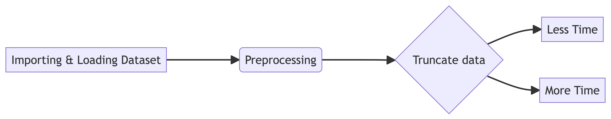

In Class Exercise 5
In Class Exercise 5
Overview
Getting Started
Installation
pacman::p_load(sf, spdep, tmap, tidyverse, sfdep)Spdep is much better than sfdep due to some additional functions added to spdep afterwards.
Importing Dataset
| Dataset | Source |
|---|---|
| Hunan_2012.csv (aspatial dataset) | |
| Hunan_2012.csv (Geospatial dataset) | |
hunan <- st_read(dsn = "../../data/geospatial/week5",
layer = "Hunan")Reading layer `Hunan' from data source
`/Users/maarunipandithurai/Documents/maars202/geospatial/IS415-GAA/data/geospatial/week5'
using driver `ESRI Shapefile'
Simple feature collection with 88 features and 7 fields
Geometry type: POLYGON
Dimension: XY
Bounding box: xmin: 108.7831 ymin: 24.6342 xmax: 114.2544 ymax: 30.12812
Geodetic CRS: WGS 84hunan2012 <- read_csv("../../data/aspatial/week5/Hunan_2012.csv", show_col_types = FALSE)Warning: Coordinate pair such as 108.7831,… is in decimal degree which means its WGS84 coordinate system as well.
Analysing by Unique Values by City in hunan2012!:
Analysing by Unique Values by City in hunan:
Pre-processing
hunan_GDPPC <- left_join(hunan, hunan2012) %>%
select (1:4, 7, 15)Plotting
tmap_mode("plot") #<- static version
#tmap_mode("view") #<- interactive version
#tm_shape(hunan_GDPPC +
# tm_fill("GDPPC", style = "quantile",
# palette = "Blues",
# title = "GDPPC") +
# tm_layout(main.title = "Distribution of GDP per capita by county, Hunan Province",
# main.title.position = "center",
# main.title.size = 1.2,
# main.title.height = 0.45,
# main.title.width = 0.35,
# frame = TRUE)Analysis
Step 1
wm_q <- hunan_GDPPC %>%
mutate(nb = st_contiguity(geometry),
wt = st_weights(nb, style = "W"), .before = 1)mutate is equivalent to pd.compute
Combining polynb() and nb2llists() from hands on exercise in the above code chunk. The above format is the more advanced improved version
Step 2 - Computing Global Moran’I
moranI <- global_moran_test(wm_q$GDPPC,
wm_q$nb,
wm_q$wt)
glimpse(moranI)List of 6
$ statistic : Named num 4.74
..- attr(*, "names")= chr "Moran I statistic standard deviate"
$ p.value : num 1.09e-06
$ estimate : Named num [1:3] 0.30075 -0.01149 0.00435
..- attr(*, "names")= chr [1:3] "Moran I statistic" "Expectation" "Variance"
$ alternative: chr "greater"
$ method : chr "Moran I test under randomisation"
$ data.name : chr "x \nweights: listw \n"
- attr(*, "class")= chr [1:2] "htest" "list"Step 3 - Performing Global Moran’I permutation test
set.seed(1234)
global_moran_perm(wm_q$GDPPC,
wm_q$nb,
wm_q$wt,
nsim = 99)
Monte-Carlo simulation of Moran I
data: x
weights: listw
number of simulations + 1: 100
statistic = 0.30075, observed rank = 100, p-value < 2.2e-16
alternative hypothesis: two.sided- nsim = 99 because it is running 100 times simulations since the index for running the loop starts from 0.
The report shows the p-value is smaller than alpha value of 0.05. Thus there is enough statistical evidence to reject the null hypothesis that the spatial distribution of GPD per capita are resembling random distribution (Independence from spatial). Because the Moran;s statistics is greater than 0. We can infer that spatial distribution shows signs of clustering.
Quarto HTML basics Recap
Creating flow charts
flowchart LR
A[Importing & Loading Dataset] ---> B(Preprocessing)
B ---> C{Truncate data}
C --> D[Less Time]
C --> E[More Time]
Importing and Loading Dataset
Preprocessing for business use case
Truncate data - for Singapore road network
Less Time for lixelisation (few lines to cut)
More Time but might exclude some critical road datapoints
Creating reflection notes
Note
Note that there are five types of callouts, including: `note`, `tip`, `warning`, `caution`, and `important`.
References: